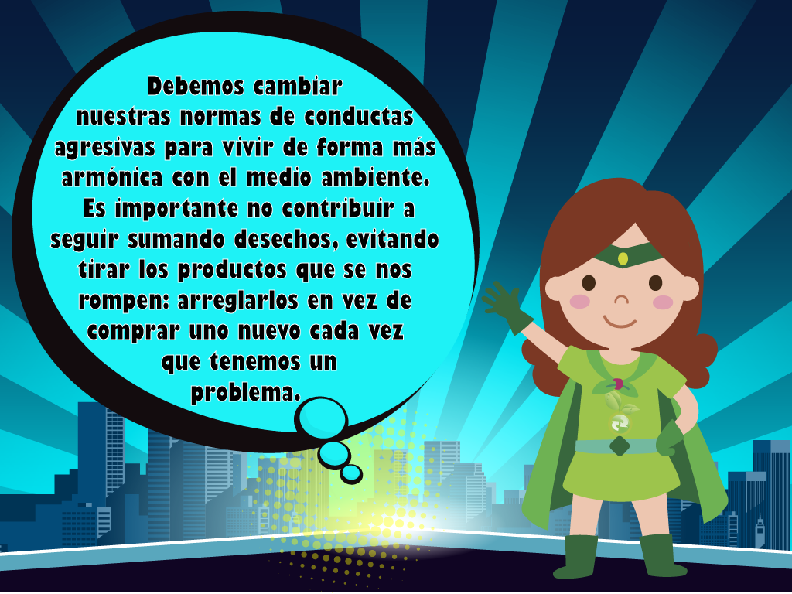
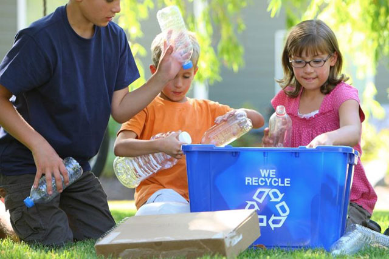

Recupera
Que podemos recuperar
Recuperar se relaciona con los procesos industriales y consiste en recuperar materiales o elementos que sirvan como materia prima. Por ejemplo, los plásticos se pueden recuperar mediante el proceso de pirólisis (por calentamiento) o los materiales utilizados en la fabricación de latas.

Como vemos son pautas de comportamiento difíciles de seguir y sí entre todos ponemos un poco de cuidado, seguro que nuestro planeta Tierra nos los agradece.
Obra publicada con Licencia Creative Commons Reconocimiento Compartir igual 4.0